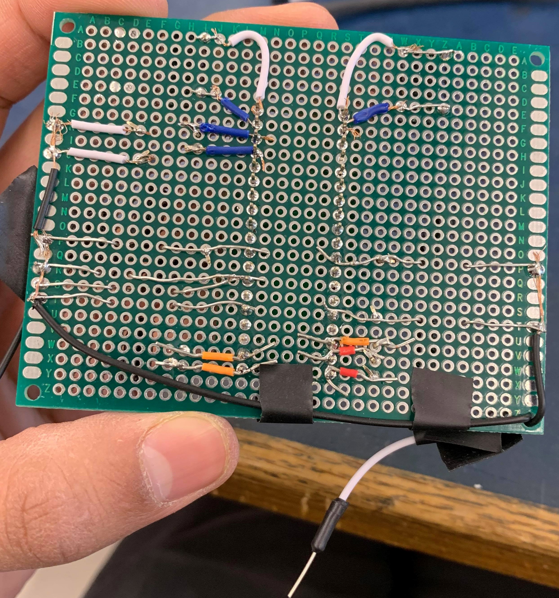

14 Mar 2019
Filming the demo video
The team at Petal is working their best to create a demo for FYDP symposium. The video will be soon available on the website.

The team at Petal is working their best to create a demo for FYDP symposium. The video will be soon available on the website.
Now you can know your view your usage by month week and even in real-time. User can also access tips on how to save and know how much they have to pay for their bill in the app. Segregation has been coded in and ported to the Pi. The segregation feature is still in debugging stage
The ADC and PI compuater has been mounted inside the casing. While the AC/DC and the PT have been placed in a seperate casing, to seperate the low voltage and high voltage components. After the initial CSA inspection on March 5th the PT was determined to be not to CSA standards. The current PT was bought from China and did not had a CSA approval on its data sheet. We are unabled to buy another PT which is CSA approved in time for the symposium. The next steps involve building out own PT using a CSA approved transformer bought prior before our next CSA inspection on Tuesday 12th March.
The soldering of the ADC was completed today. This includes the connections for the Current Transformer's analog ports as well as ports for the Potential Transformer. Integrating the ADC involved the soldering of necessary capacitors and wires to connect the pins of the ADC together. The board was properly grounded and powered from the buck converter where leads were also soldered. Upon testing the circuit it worked well and met expectations. Now it is time to program the Raspberry Pi to collect and process data from the sensors.

Current Transformers were integrated with analog connections for easy integration with the Petal box. The CTs are now able to be plugged in the 3.5mm ports to send data to the system.
The parts have arrived and we can start testing and assembling the Petal box
This week was spent soldering the ADC onto the PCB that came with the order. The task proved to be difficult since there were 38 connections to solder all within a 2cm range. The way it was done was using flux to prime the connections for easy soldering and then lining up the ADC on the board. Solder was then swept on the connections and the residue solder was removed with a wick. This yielded a workable solder for the board.
Afterwards, the opposite side of the board was occupied with pins allowing for simple connection with the controller.

This is a test to show that the website is live. Hello World!